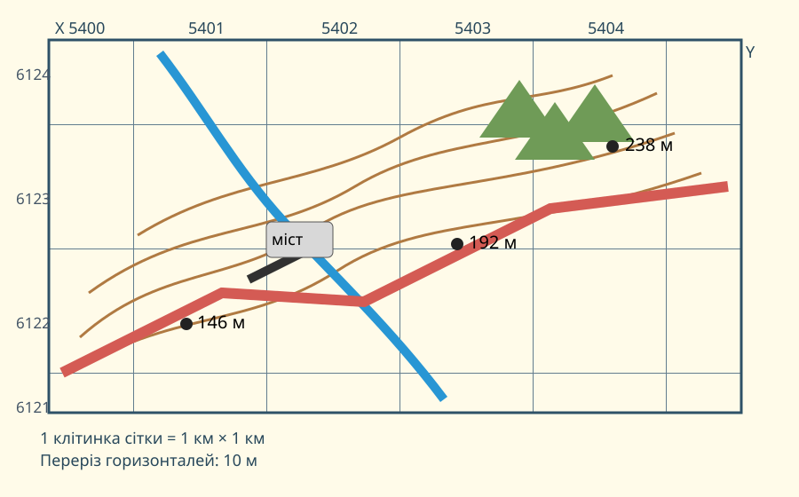

Проблема: найкоротший маршрут не завжди найкращий
Ситуація: групі треба пройти від висотної точки 146 м до точки 238 м. На карті видно річку, міст, дорогу, схили та ліс.
До кінця уроку Ви маєте обґрунтувати маршрут щонайменше трьома картографічними доказами.
Навчальна топографічна карта

- Сітка й масштаб.
- Рельєф: горизонталі та висотні точки.
- Гідрографія: річка, місця переходу.
- Транспорт: дорога, міст.
- Рослинність та інші перешкоди.
Пряма відстань за сіткою: d = √(Δx² + Δy²)
Якщо Δx і Δy виміряні в кілометрах, d теж буде в кілометрах.
4 станції практикуму
Між двома точками різниця по горизонталі 3 клітинки, по вертикалі — 4. Обчисліть пряму відстань.
Підказка: це класичний прямокутний трикутник.
Точка А має абсолютну висоту 146 м, точка Б — 238 м. Яка відносна висота Б щодо А?
Де схил крутіший: там, де горизонталі розташовані ближче одна до одної, чи там, де вони далі?
Оберіть кращу стратегію переходу з південного заходу до північного сходу.
Порівняйте з реальним планом міста
Міський план зазвичай краще показує адреси, дорожню мережу й об’єкти інфраструктури. Топографічна карта сильніша, коли треба оцінити рельєф, висоти, форму поверхні та прохідність місцевості.
CER: обґрунтуйте маршрут
Який маршрут кращий?
Мінімум 3 факти з карти.
Як саме ці факти впливають на безпеку, довжину або складність шляху?
Практична робота на 10 балів
Робота відкривається лише після заповнення даних учня.
Ваші відповіді зі станцій уже є вище. Натисніть кнопку — система перевірить обчислення та вибір, а відкриті пояснення залишаться для вчительського оцінювання.
Міні-аудит маршруту у своїй місцевості
1) Відкрийте OpenStreetMap або іншу карту своєї місцевості. 2) Оберіть маршрут 1–2 км. 3) Назвіть три об’єкти, які впливають на вибір шляху. 4) Поясніть, яких топографічних даних бракує звичайній онлайн-карті для повної оцінки рельєфу.